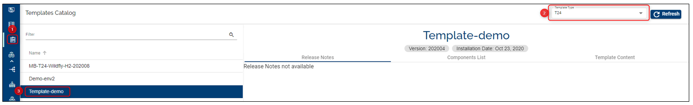

Customize templates
Introduction
This document can be used by technical staff who need to customize already defined templates based on specific requirements. Templates customization will allow changes related to:
- the environment applications (i.e. the scripts to install and configure each application and the information displayed in the Portal for each application);
- the VM specifications in which each application is deployed.
Note
This guide presumes that a environment is already created and available under an Organisation for which the templates customization functionality is allowed.
To start customizing your environment built using a Temenos Continuous Deployment Platform template, login to Temenos Continuous Deployment platform using your organisation user, go to your environment page and click on the Customize Template button attached to Repository application.

After clicking the Customize Template button, a notification appears which informs that This will initiate template customization based on environment specifications and also change the automation scripts. Please review the Templates Customization guide. Tick the box and click Confirm to proceed.

The message Customize Template initiated appears on the screen and the status of Repository application is changed to Customizing, as per bellow picture. The operation triggered by the Customize Template button copies in the environment repository all the template files used to create the environment.

Note
Click the Refresh button to see when the template customization is completed.
Also below the environment description, following message is displayed "Scripts are customized for this environment." and the button Save as a new template appears.
Repository structure after template customization
The difference in the environment repository after the template customization is the presence of the environments folder, as it can be observed bellow.
If you want to keep the initial settings of your environment, it is advised to clone the environment and do the changes. Please check the following user guide to see how to clone an environment locally and get familiar with the below repository structure.

The structure of the environments folder is represented by 4 folders (found under common folder):
- extraPlays
- infra-templates
- playbooks
- roles
Note
Depending on the template type (Extend or Assemble), the extraPlays folder may be or may not be present. To check the template type, go to Templates Catalog button on the left side menu and check the template used for your environment. If it contains the Components section, it means this is an Assemble template type and the extraPlays folder will be present after customize template action.
Important
Depending on the template type (Extend or Assemble), the infra-templates and roles folders content may differ. For example:
-- for Extend templates, to change the h2db role you need to change the main.yml file from common/roles/h2/tasks/
-- for Assemble templates to change the h2db role you need to change the deploy_main.yml file from common/roles/h2db/tasks/

The description of each folder is presented bellow:
| Folder Name | Folder Description |
|---|---|
| extraPlays | This folder yml configuration files related to the template used in the creation of the environment. |
| infra-templates | This folder contains an infratemplate.yml file that describes the template of your environment (i.e. information related to the applications that are installed in your environment and VM specifications in which environment applications are deployed.). |
| playbooks | This folder contains a playbook.yml file that describes the set of roles that will be installed for each host(VM) defined under [services][servers] component in infratemplate.yml file. |
| roles | This folder contains all the roles defined for your template. |
A role represents any of your environment applications or it can be a module/plugin/framework that is required for your environment applications. A role is described by the following folders:
defaults- contains default variables for the role.files- contains the files which are deployed using this role.handlers- contains handlers that are used by this role.meta- defines meta data for this role.tasks- contains the list of tasks that is executed for this role.templates- contains templates that can be deployed using this role.vars- contains the role variables.
Note
A role definition must include at least one of the above folders. Thus, any unused folders can be excluded. However, any in use folder must include a main.yml file that contains the relevant information, respectively a deploy_main.yml file in case of assemble templates..
Note
Ansible automation tool is used by the Platform to automate the environment creation based on applications with specific requirements and installation steps. For more details about Ansible, please access this link.
Start template customization
There are several ways in which you can customize your environment template based on the type of your change.
Note
All the changes that must be implemented to a cloud environment template can be done only in environment repository. Thus, environment repository must be cloned in your local machine. For more information about how to clone an environment repository, please check this page.
Changes that will require the rebuild of your environment:
Note
The rebuild operation will take around 20 minutes and it will recreate all environment resources (VMs) and run the deployment of all roles defined in environment template.
To trigger the rebuild of your environment, login to the portal using your organisation user, go to your environment page and click on the Rebuild button attached to your environment main application.- Changes related to applications that will be installed under your environment.
The applications list is defined in [services][servers] component from infratemplate.yml file located in /environments/common/infra-templates folder of environment repository. An example of a template with 2 applications (t24 & h2) is presented bellow.

-> If an application must be removed from the default application list of the template, then the corespondent item must be removed from [services][servers] component and the item related to the application must be removed from playbook.yml file from /environments/common/playbooks folder. -> If an application must be added to the default application list of the template, then a new item must be added in [services][servers] component. After this, a new role must be created for this application in /environments/common/roles folder of environment repository and playbook.yml file from /environments/common/playbooks must be updated with a new item for the new application. - Changes related to applications information (name, description, etc.) displayed in the Portal.
Each environment application has a related item in [services][servers] component from infratemplate.yml file. Please check the description of each key (e.g. app_name, app_description, etc.) in infratemplate.yml file in order to understand which information appear in the Portal.
- Changes related to VM specifications in which environment applications are deployed.
The VM specifications on which each environment application is deployed are defined in [provider][azure][config] component from infratemplate.yml file.

[server_size] key defines the VM specifications that will be applied for all applications defined in [services][servers] component. If different VM specifications must be applied to each environment application, then [server_size] key must be set in [services][servers] component for each application.
The detailed VM specifications can be viewed here.
Note
After making the required changes, commit and push them to your environment repository and trigger the rebuild.
To make sure there are no syntax erros in the updated infratemplate.yml file, you can use this online validator.- Changes related to applications that will be installed under your environment.
Changes that will require the deployment of your environment:
Note
The deployment operation will take around 5 minutes or more depending on your changes.
To trigger the deployment of your environment, login to the cloud portal using your organisation user, go to your environment page and click on the Deploy button attached to Repository application.- Changes related to roles already present in template. (i.e. an environment is already created with this template)
If an already present role must be updated (for example, the tasks list for a role must be updated), make the required changes for that role, commit and push the changes to the environment repository and trigger the deployment.
- Changes related to roles tha represent a module/plugin/framework and not an application.
New roles that represent a module/plugin/framework and not an application can be added to an application of your environment. In order to accomplish this, a new role along its settings must be created in /environments/common/roles folder and the new role must be added to the specific application in playbook.yml file from /environments/common/playbooks folder. After this, push all these changes to environment repository and trigger the deployment.
- Changes that are not related to environment template.
For the changes described here that are not related to environment template, you just have to commit and push the required changes to your environment repository and trigger the deployment.
Note
If the deployment operation is not successful for your changes, please rebuild the environment.
- Changes related to roles already present in template. (i.e. an environment is already created with this template)
The cloud portal catalogue of available templates can be checked here.
Save New Template
After doing the above steps (template customization), go to the Actions tab on your environment, select the Save as a new template option. Fill in the Environment Name, Environment Description, read the note, tick the confirmation by which you understand the Save As Template action and agree to proceed further, then click Save.

You will see a message on the screen Environment saved as a new template.
Go to Templates Catalog and search for the new template, which will be available in the templates list.
